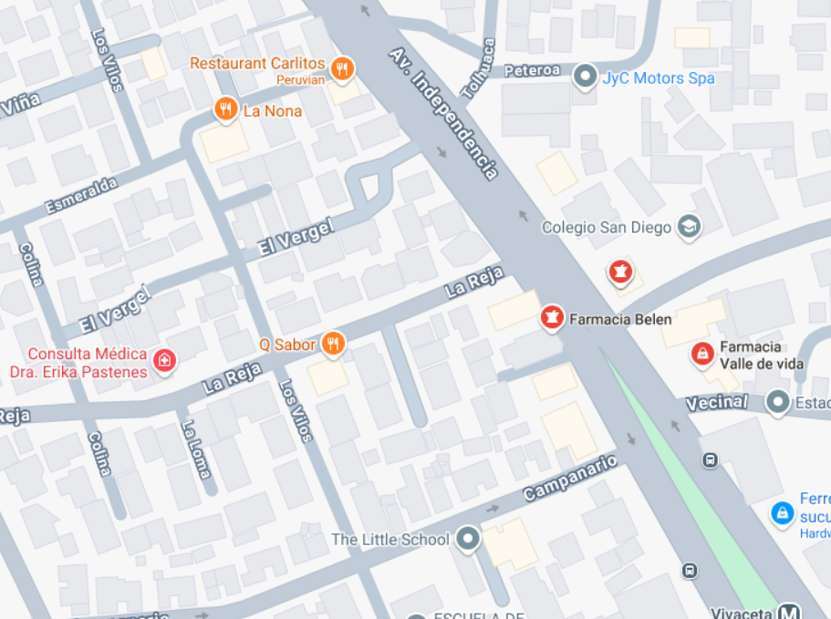

<ion-header [translucent]="true">
  <ion-toolbar>
    <ion-title>Mapa</ion-title>
  </ion-toolbar>
</ion-header>

<ion-content [fullscreen]="true"  class="ion-padding">
  <div>
    <!--Barra de busqueda-->
    <ion-row style="margin-top: 25px;">
      <ion-col style="min-width: 75%;">
        <ion-input 
        label="Cerca de" 
        label-placement="stacked"
        fill="outline"
        placeholder="Direccion">
          <ion-icon name="location-outline" slot="end" size="large" color="secondary"></ion-icon>
        </ion-input>
      </ion-col>

      <ion-col style="min-width: 25%;">
        <ion-button
        style="height: 100%; margin-top: -1px; width: 60px;"
        shape="round">
          <ion-icon
          slot="icon-only"
          name="search-outline"
          size="large">
          </ion-icon>
        </ion-button>
      </ion-col>
    </ion-row>

    

    <!--Mapa-->
    
  </div>
</ion-content>
